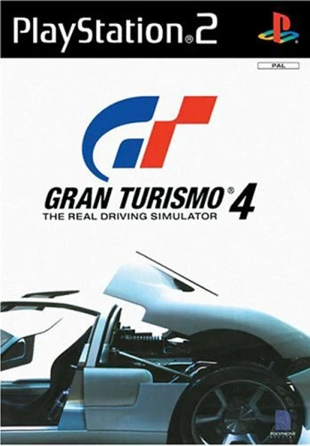

- Juego: Gran Turismo 4
- Peso: 3.93 GB
Más de 700 coches de 80 fabricantes y más de 50 escenarios. La última incorporación a la saga Gran Turismo® llega en una escala sin precedentes. Además de la adquisición de coches, la posibilidad de tunearlos y ganar carreras, se han incorporado nuevas y revolucionarias funciones. Una de ellas es el modo "B-Spec", en el que podrás disfrutar de las carreras como en un juego de rol. La otra es el "Modo foto", en el que puedes tomar y guardar fotografías de tus coches como si estuvieras viajando por el mundo.